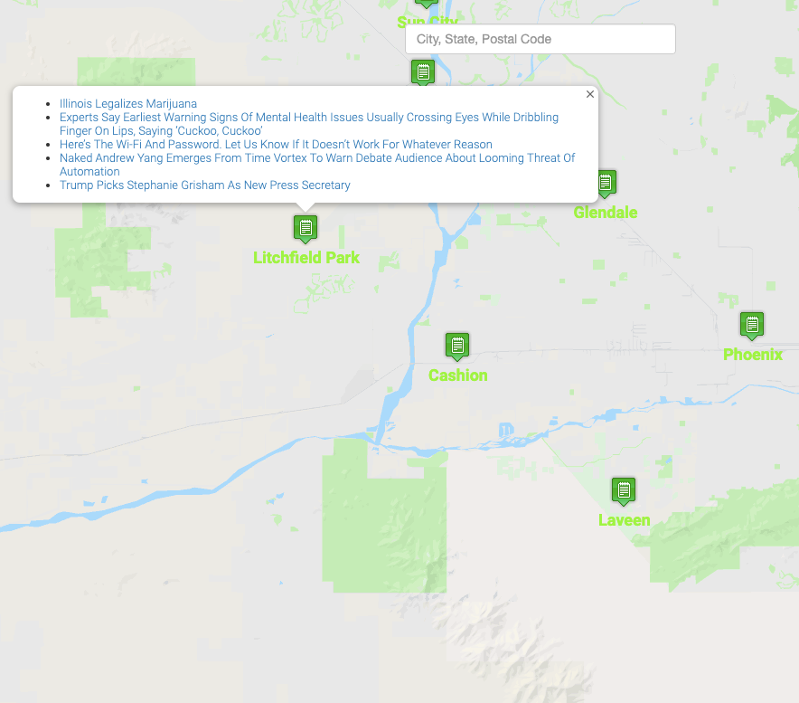

positiveRotationTransforms.append(CGAffineTransform(rotationAngle:CGFloat(angleMult * angleInc)))
#id1:checked ~ #image1
{
opacity: 1;
animation: gallery .5s linear;
}
map = new google.maps.Map(canvas, options);

q = request.args.get("q") + "*"
places = db.execute('''SELECT * FROM virt_table WHERE virt_table MATCH :q''', q=q)
return jsonify(places)
marker.addListener('click', function(event) {
showInfo(marker, null, event);
$.getJSON(Url, function(data) {
// info.open(map, marker);
contentString = ""
for (let i = 0; i < 5; i++) {
articleLink = data[0][i]["link"]
articleTitle = data[0][i]["title"]
contentString += `- ${articleTitle}
`
}
contentString += "
"
showInfo(marker, contentString, event);
});
}); rows = db.execute("SELECT * FROM users WHERE username = :username", username=request.form.get("username"))
if len(rows) == 1:
if rows[0]['username'] == request.form.get("username"):
return apology("this username is already taken", 400)hash = generate_password_hash(request.form.get("password"))
session["user_id"] = db.execute("INSERT INTO users (username, hash) VALUES (:username, :hash)",
username=request.form.get("username"), hash=hash)stocks_owned = db.execute("SELECT transactions.symbol, SUM(transactions.shares) AS
shares FROM transactions WHERE user_id=:id GROUP BY transactions.symbol",
id=session["user_id"])
for index, stock in enumerate(stocks_owned):
this_stock_info = lookup(stock['symbol'])
stocks_owned[index]['name'] = this_stock_info['name']
stocks_owned[index]['price'] = usd(this_stock_info['price'])
stocks_owned[index]['total'] = usd(this_stock_info['price'] * stock['shares'])
total_value += this_stock_info['price'] * stock['shares']def errorhandler(e):
"""Handle error"""
return apology(e.name, e.code)def apology(message, code=400):
def escape(s):
"""Escape special characters: https://github.com/jacebrowning/memegen#special-characters"""
for old, new in [("-", "--"), (" ", "-"), ("_", "__"), ("?", "~q"),
("%", "~p"), ("#", "~h"), ("/", "~s"), ("\"", "''")]:
s = s.replace(old, new)
return s
return render_template("apology.html", top=code, bottom=escape(message)), code